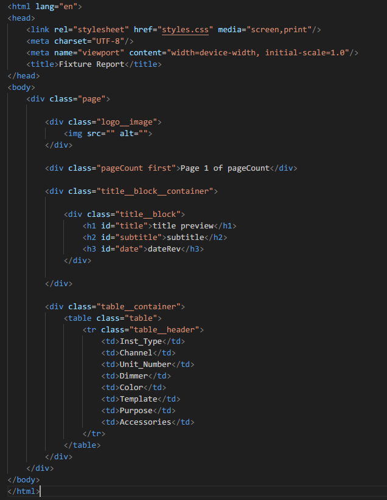
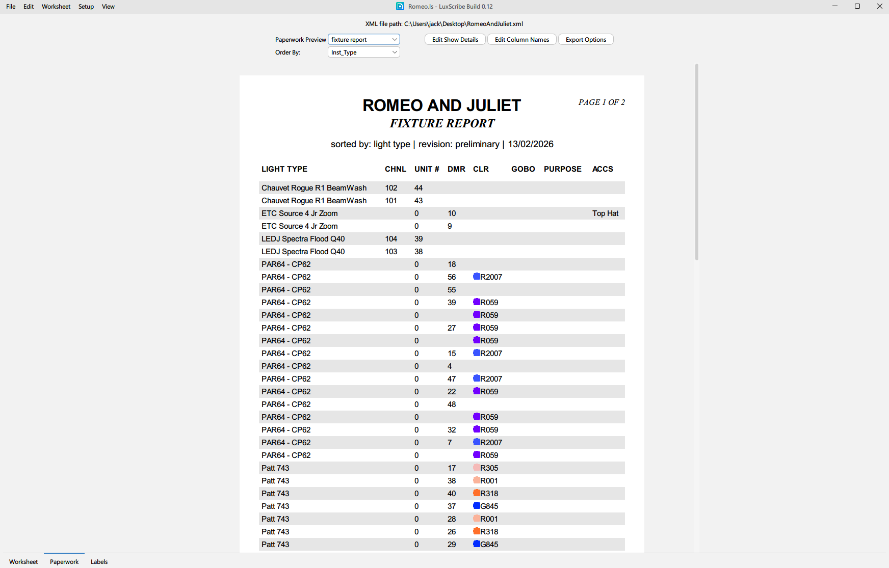

For the last few weeks I have been working on a desktop application to generate lighting related paperwork such as fixture
reports, color calls, and hopefully much more! Now that the application somewhat works I wanted to dive in and talk
about how and why it works.
(most images can be clicked to enlarge)
As you may know, the only "real" solution to creating lighting based paperwork is the much loved Lightwright. Lightwright has existed in one form or another since 1973. In that time, it has largely been written and maintained by just one man, John McKernon. His legacy will be nothing short of legendary within this industry and nothing within this post is designed to disrespect Lightwright, John or the wider team.
Lightwright is a fantastic product, its ubiquitous across the industry for a good reason. With the introduction of Lightwright 7, the pricing structure moved to a subscription based plan, rather than the perpetual license that had been previously offered. At the time of writing, two subscription plans are available, $39 a month (£28.58), or $399 a year (£292.41). I think this actually isn't that outlandish of a price for a product that is used in top level venues across the globe (Especially when you compare that price to a year of Vectorworks!).
Reading that announcement got me thinking, how hard could it be to create an application that does the same thing as Lightwright?
Well, nearly two months later, and, at a guess, a full weeks worth of time spent programming, I've built an application that just barely scratches the surface.
Enter, LuxScribe!
LuxScribe is a desktop application written in java, meaning it can run on Windows, MacOS and Linux.
As it stands, it does not remotely stack up to Lightwright in terms of features, and almost certainly never will. 90% of the reason I started working on this was because I enjoy software programming, and I wanted to see how complex something like this would be to build.
The operational concept is identical to lightwright, you link in the Vectorworks provided XML file, parse that data, and lay it out in different templates for exporting. The XML file used in this blog post contains data from an early draft of a production I am working on later this year.
The interface is very similar to lightwright 6, if it ain't broke...
Upon opening a project, LuxScribe parses (reads) the XML file and loads everything into an internal database. At the same time, it lays everything out in the worksheet view.
Currently, the XML file cannot be edited directly from the worksheet view, though that is a feature being currently worked on.
The Interface supports both Light and Dark mode. Click on the image to see both.
Paperwork is controlled by an html and css template. These templates are placed in a folder and automatically discovered by LuxScribe upon opening the application.

Templates are used to define what data should be displayed on what kind of paperwork. When LuxScribe creates the paperwork, it reads through the template and inserts data based on what it finds.
The columns to use are put into the template as the table header. The order of those columns is also controlled by the order in which they appear on the template.
When building, LuxScribe will grab the name of each column, and retrieve the appropriate data for each row. Once all pages have been built, it renames the columns to the user set names.
It also counts the pages being built as it goes, and renumbers the page count appropriately.
The actual look of the paperwork is controlled by a CSS file. This approach, whilst not as easy to use as a drag and drop builder, offers the same virtually unlimited customization options, but is way easier to code.

Here you can see what the Fixture Report looks like within LuxScribe. The title, revision and date are all set within a menu and are applied to each report.
From this view you can also control which column is used to sort the data. This column is then also displayed on the paperwork.
One feature I'm really excited by is the gel approximation. I've created custom XML lookup files for Lee, Rosco and Gam gel filters. Each file contains every gel made by each manufacturer, its id, name, approximate color value and the description of its use case as given by the manufacturer. When LuxScribe detects that its working with color data, it takes the gel name, finds the approximate color value, and inserts that into the paperwork along with the gel name. It doesn't render that nicely within the preview, but it looks fantastic on the final export.
A prominent bug which can be seen here is font handling. Currently, the font is defined within the CSS file. Due to the way the library I'm using to preview the file works, the text is not always rendered correctly, this is most obvious with italic text.
Fortunately, the exported file works correctly, and all fonts appear as they should. Eventually, I plan to allow the changing of the font within the application itself.
This is that same page but exported to a printable file, you can see the italic text now looks correct, and all of the font weights are slightly different to the preview.
If you click on the image, you can also see what every page past the first is built to look like.
Currently, the layout of the smaller title card on every page beyond the first is controlled by a combination of CSS and the builder code itself. The visual layout is controlled by CSS, like everything else, but the actual data is being inserted regardless of what the template says, as it currently, doesn't support a template for what everything beyond the first page should look like. This is being worked on.
A future planned feature is to support footer data in a similar fashion.
I plan to keep working on LuxScribe in my free time, both to fix bugs and continue introducing new features.
Feature Wishlist:
- OSC Console link to EOS with ability to patch and channel check
- Proper handling of accessories (This is a whole thing don't get me started)
- Color Cut sizes paperwork
- Fixture Quantity View
- Light Labels
- Option to have some level of connection to Capture instead of Vectorworks
- Drag and drop paperwork / label template creator (The last thing I'll ever do)
{kind=link}
{kind=link}
{kind=link}
{kind=link}
{kind=link}
{kind=link}